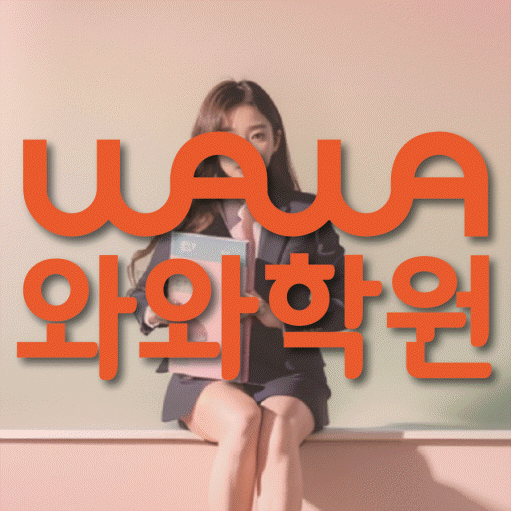

와와학습코칭센터 미사점
경기 하남시 미사강변대로 212 미사센트럴프라자 309
GRADE 11 ENGLISH LOCAL GUIDE
와와학습코칭센터 미사점의 위치와 과목별 가능 학년을 확인하고, 고2 영어 상담에 필요한 학교·학습 자료를 준비해 보세요.
안내된 영어 가능 학년은 초1, 초2, 초3, 초4, 초5, 초6, 중1, 중2, 중3, 고1입니다. 고2 영어 수업은 목록에 없어 수강 가능 여부를 별도로 확인해야 합니다.
경기 하남시 미사강변대로 212 미사센트럴프라자 309
현재 반 편성과 시간표는 상담에서 확인
광주하남교육지원청 등록 제1913호
통합 상담 전화 010-6839-8283 · 문의할 때 와와학습코칭센터 미사점과 학생의 학년을 말씀해 주세요.
교습비 자료의 과목·수업 시간·횟수와 별도 비용을 상담 내용과 함께 확인해 주세요.
아래는 가정에서 활용하는 일반 학습 점검 예시입니다. 현재 학교·교재에서 배우는 내용에 해당할 때 활용하고, 아직 배우지 않은 내용은 현재 진도에 맞춰 확인해 주세요. 학생의 학습 수준과 센터의 실제 수업 구성은 상담에서 확인할 수 있습니다.
직접 적힌 사실과 그 사실에서 추론한 내용을 구별했나요?
직접 확인할 예 Jin checked the bus schedule twice and arrived at the stop early.에서 준비한 행동은 사실이고, 버스를 놓치지 않으려 했다는 해석은 추론입니다. 다른 해석도 가능한지 살펴보세요.
always, may, if 같은 표현이 주장 범위를 어떻게 바꾸는지 확인했나요?
직접 확인할 예 If students review their notes, they may remember more.에서 조건과 가능성을 표시해 보세요. 반드시 더 많이 기억한다는 문장으로 바꾸면 원래 뜻과 다른 이유를 설명해 보세요.
본문 근거를 고른 뒤 요구된 분량과 문장 형태를 확인했나요?
직접 확인할 예 The team changed its plan because the road was closed.를 바탕으로 계획을 바꾼 이유를 The road was closed.로 답해 보세요. 실제 문항이 요구하는 문장 수와 접속사 사용 조건도 점검해 주세요.
틀린 문항의 근거 문장, 모르는 낱말, 읽기 어려운 구문을 나누어 적어 보세요. 정답만 베끼지 말고 오답을 고른 이유와 다시 읽어 찾은 근거를 짧게 기록해 주세요.
교재 이름·쪽수와 혼자 해결한 부분을 함께 표시하면 상담에서 현재 학습 상태를 설명하기 쉽습니다.
제공 자료에 해당 학교급의 참고 목록이 없어 학교명을 별도로 확인해야 합니다.
학교 목록은 지역 참고 자료입니다. 해당 학교별 반 운영이나 시험 대비 수업을 확인한 정보는 아닙니다. 학생이 사용하는 교재, 실제 과목명·진도, 시험 범위 안내와 최근 오답을 준비해 주세요.
읽기·어휘·문장 쓰기 중 먼저 점검할 부분, 독해 답의 근거를 확인하는 방법, 고친 문장을 다시 확인하는 방법을 질문해 보세요.
고2 영어 수강 가능 여부는 위의 센터 정보에 따라 먼저 확인해야 합니다. 이 질문과 학습 예시는 센터의 확정된 수업 방식이나 제공 서비스를 뜻하지 않습니다.
안내된 영어 가능 학년은 초1, 초2, 초3, 초4, 초5, 초6, 중1, 중2, 중3, 고1입니다. 고2 영어 수업은 목록에 없어 수강 가능 여부를 별도로 확인해야 합니다.
안내 자료에 해당 학교급의 학교 목록이 없습니다. 학교별 전용 반 개설 여부는 별도로 확인해 주세요. 재학 학교와 학년을 알려 주고 학교 시험 범위표, 교과서와 수업 프린트를 바탕으로 상담할 수 있습니다.
어휘·독해 오답과 최근 학교 학습 자료를 준비해 보세요. 학생이 혼자 해결한 부분과 도움이 필요했던 부분을 표시하고, 희망하는 수업 요일·시간도 함께 정리하면 좋습니다.
센터의 교습비 자료와 상담에서 과목·횟수·수업 시간을 대조해 주세요. 교재비 등 별도 비용, 결석 시 보강 기준과 과제 피드백 방식도 함께 확인하면 좋습니다.
다음은 상담 준비를 돕기 위한 가상 상황입니다.
뜻을 몰랐던 단어와 해석이 막힌 문장을 최근 학습 자료에 표시하고, 무엇을 먼저 연습하면 좋을지 질문하는 상황을 생각해 볼 수 있습니다.
일주일의 학교 일정과 집에서 공부할 수 있는 시간을 적어 봅니다. 상담에서는 시작할 분량과 다음 점검일을 어떻게 정할지 질문해 보세요.



와와학습코칭센터 미사점의 위치와 풍산동 생활권을 기준으로 고2 영어 상담 정보를 확인합니다. 방문 전 실제 이동 동선과 상담 가능 시간을 함께 확인해 주세요.